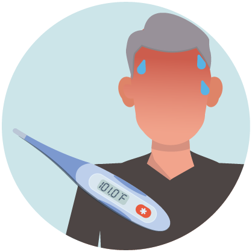
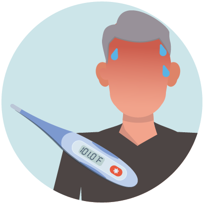
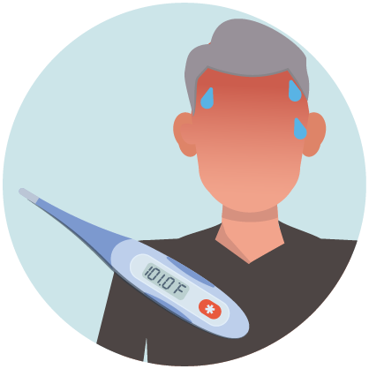

Reported illnesses have ranged from mild symptoms to severe illness
and death for confirmed coronavirus disease 2019 (COVID-19) cases.
These symptoms may appear 2-14 days after exposure (based on the
incubation period of MERS-CoV viruses).

Coronaviruses are a large family of viruses which may cause illness in animals or humans. In humans, several coronaviruses are known to cause respiratory infections ranging from the common cold to more severe diseases such as Middle East Respiratory Syndrome (MERS) and Severe Acute Respiratory Syndrome (SARS). The most recently discovered coronavirus causes coronavirus disease COVID-19.
The risk depends on where you are - and more specifically, whether there is a COVID-19 outbreak unfolding there.
For most people in most locations the risk of catching COVID-19 is still low.
However, there are now places around the world (cities or areas) where the disease is spreading. For people living in, or visiting, these areas the risk of catching COVID-19 is higher.
Governments and health authorities are taking vigorous action every time a new case of COVID-19 is identified. Be sure to comply with any local restrictions on travel, movement or large gatherings. Cooperating with disease control efforts will reduce your risk of catching or spreading COVID-19.
COVID-19 outbreaks can be contained and transmission stopped, as has been shown in China and some other countries. Unfortunately, new outbreaks can emerge rapidly. It’s important to be aware of the situation where you are or intend to go. WHO publishes daily updates on the COVID-19 situation worldwide.
Illness due to COVID-19 infection is generally mild, especially for children and young adults. However, it can cause serious illness: about 1 in every 5 people who catch it need hospital care. It is therefore quite normal for people to worry about how the COVID-19 outbreak will affect them and their loved ones. We can channel our concerns into actions to protect ourselves, our loved ones and our communities. First and foremost among these actions is regular and thorough hand-washing and good respiratory hygiene. Secondly, keep informed and follow the advice of the local health authorities including any restrictions put in place on travel, movement and gatherings.
While some western, traditional or home remedies may provide comfort and alleviate symptoms of COVID-19, there is no evidence that current medicine can prevent or cure the disease. WHO does not recommend self-medication with any medicines, including antibiotics, as a prevention or cure for COVID-19. However, there are several ongoing clinical trials that include both western and traditional medicines. WHO will continue to provide updated information as soon as clinical findings are available.
Not yet. To date, there is no vaccine and no specific antiviral medicine to prevent or treat COVID-2019. However, those affected should receive care to relieve symptoms. People with serious illness should be hospitalized. Most patients recover thanks to supportive care. Possible vaccines and some specific drug treatments are under investigation. They are being tested through clinical trials. WHO is coordinating efforts to develop vaccines and medicines to prevent and treat COVID-19. The most effective ways to protect yourself and others against COVID-19 are to frequently clean your hands, cover your cough with the bend of elbow or tissue, and maintain a distance of at least 1 meter (3 feet) from people who are coughing or sneezing.
The “incubation period” means the time between catching the virus and beginning to have symptoms of the disease. Most estimates of the incubation period for COVID-19 range from 1-14 days, most commonly around five days. These estimates will be updated as more data become available.
Coronaviruses are a large family of viruses that are common in animals. Occasionally, people get infected with these viruses which may then spread to other people. For example, SARS-CoV was associated with civet cats and MERS-CoV is transmitted by dromedary camels. Possible animal sources of COVID-19 have not yet been confirmed.
To protect yourself, such as when visiting live animal markets, avoid direct contact with animals and surfaces in contact with animals. Ensure good food safety practices at all times. Handle raw meat, milk or animal organs with care to avoid contamination of uncooked foods and avoid consuming raw or undercooked animal products.
It is not certain how long the virus that causes COVID-19 survives on surfaces, but it seems to behave like other coronaviruses. Studies suggest that coronaviruses (including preliminary information on the COVID-19 virus) may persist on surfaces for a few hours or up to several days. This may vary under different conditions (e.g. type of surface, temperature or humidity of the environment).
If you think a surface may be infected, clean it with simple disinfectant to kill the virus and protect yourself and others. Clean your hands with an alcohol-based hand rub or wash them with soap and water. Avoid touching your eyes, mouth, or nose.
The virus that causes COVID-19 is mainly transmitted through droplets generated when an infected person coughs, sneezes, or speaks. These droplets are too heavy to hang in the air. They quickly fall on floors or surfaces.
You can be infected by breathing in the virus if you are within 1 metre of a person who has COVID-19, or by touching a contaminated surface and then touching your eyes, nose or mouth before washing your hands.